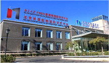

北京肿瘤医院国际诊疗中心
北京新里程肿瘤医院是由新里程医院集团与北京大学肿瘤医院合作成立的中外合资肿瘤专科国际医院。
北京肿瘤医院国际诊疗中心 北京新里程肿瘤医院是由新里程医院集团与北京大学肿瘤医院（北京肿瘤医院）合作成立的中外合资肿瘤专科国际医院。
- 北京肿瘤医院国际诊疗中心
医院坐落于北京“城市绿肺”万丰公园东门南侧，面积15000平方米，是目前国内独家花园式、国际化的肿瘤专科中外合资医院。荟萃来自北京大学肿瘤医院和台湾长庚纪念医院等众多国内外肿瘤领域著名专家，设置了胃肠肿瘤外科、胸部肿瘤外科、淋巴肿瘤内科、消化肿瘤内科、肾癌与黑色素瘤内科、胸部肿瘤内科、姑息治疗中心、特色中医等近20个临床科室和研究中心，配备了全球先进的核磁共振、CT和彩超等大型医疗设备，提供个性化的肿瘤早期查诊、综合治疗、远程医疗、国际会诊和全天候24小时咨询、预约服务。秉承“本道德良心从事医疗事业，全里程照护迈向希望人生”的服务宗旨，引进台湾长庚纪念医院“责任中心制度“、“主诊医师负责制度”、“专科护理师制度”、“个案管理师制度”等医护管理模式，创新“多学科联合会诊”、“全里程照护服务”、“全生命周期健康管理”等高端医疗健康管理体系。
汇集来自北京大学肿瘤医院、台湾长庚纪念医院、北京大学人民医院、301医院等三甲医院及港澳台知名专家，同时与美国、日本、韩国等国际知名癌症中心的专家合作，形成具有国际一流水平的肿瘤诊疗专家团队。
拥有多位肿瘤医疗领域学科带头人，运用国际先进的诊疗技术、新设备、新疗法，极大地提高肿瘤病人的治疗效果与生存质量。
以“病人为中心”的特色医疗、护理服务，创新的“多学科专家联合诊断、联合治疗”模式，便捷高效的日间诊疗，定制化的“早查、早诊、早治“，提供远程诊断支持与网络化的增值服务。
配备经验丰富、训练有素的资深医护团队和管理团队，为患者定制独特的、个性化的诊疗方案，制度与机构的全面支持，旨在更加保障人性化的病人管理，更好体现国际水准和技术能力的组织与协调。
与德国西门子医疗、瑞士罗氏诊断、美国GE医疗、日本奥林巴斯医疗等设备机构建立紧密合作关系。在最新医疗设备和试剂的引进、设备升级与维护、专业化培训等方面展开全面合作，并打造符合国际标准的静脉药物配制中心和百级层流净化手术间。